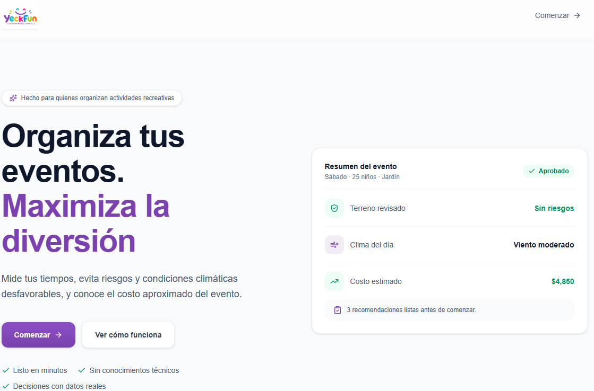
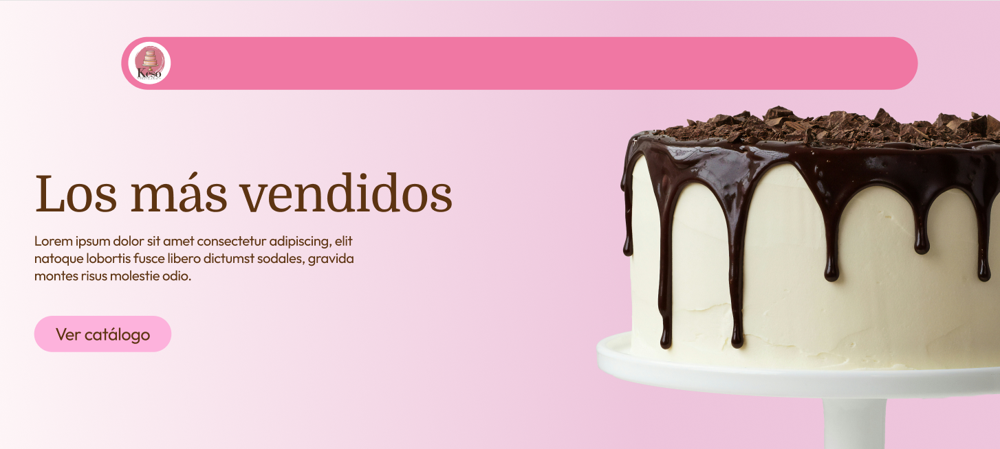
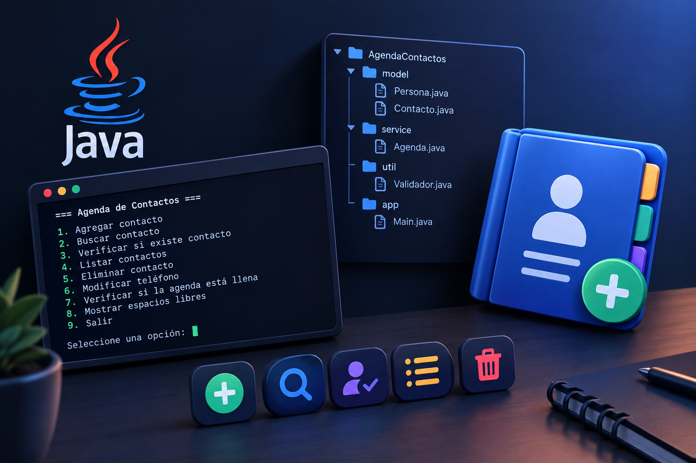

Me gusta aprender sobre tecnología, explorar nuevas herramientas y convertir lo que aprendo en proyectos. Mi formación combina Java Full Stack y Big Data.
"Ideas que construyen el futuro"
La tecnología cambia constantemente y me gusta mantenerme al día, aprender nuevas herramientas y entender cómo pueden relacionarse entre sí. Me interesa encontrar formas de hacer más sencillas las actividades de un área, desde automatizar tareas hasta conectar y orquestar distintos procesos.
Mi formación me ha llevado por distintos caminos, desde el desarrollo de aplicaciones hasta el trabajo con datos y automatización. Disfruto aprender algo nuevo, ponerlo en práctica y ver cómo una idea va tomando forma durante un proyecto.
Este portafolio reúne algunos de esos proyectos, aprendizajes y experiencias que he ido construyendo en el camino.
Ver CV en PDF“La única constante es el cambio”. — Heráclito


Plataforma web de comercio y gestión integral para pastelería (control de pasteles, ventas, entregas y alcance publicitario).

Sistema en Java desarrollado en entorno de Hackathon para administración de contactos por consola, aplicando POO, herencia, colecciones y validaciones.
Un nuevo desarrollo en camino. Próximamente más detalles sobre arquitectura, microservicios y despliegue.
Estoy disponible para nuevas oportunidades laborales, desarrollo de proyectos y colaboraciones. Ponte en contacto conmigo directamente:
¿Tienes una propuesta o consulta? Puedes redactar tu correo directamente.
Enviar correo directo →